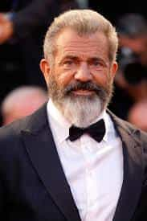

Obadiah Austin is a Texan in exile. He used to write about MMA, pro-wrestling and movies. He then actually tried MMA and making movies (and had more success in the former).


Ten years after a DUI arrest and the release of his war film Hacksaw Ridge, Hollywood has officially forgiven Mel Gibson. The American-Australian star, best known for his portrayal of slightly unhinged characters like Max Rockatansky in Mad Max and Martin Riggs in Lethal Weapon, also directed the critically lauded and Oscar winning Braveheart, a film that became an instant classic with its graphic depictions of medieval warfare.
However, Mel dwarfed those accomplishments with the success and controversy of The Passion of the Christ, a film that despite its foreign language dialogue and the fuss it caused among prominent Jewish leaders, won over the faithful everywhere, showing there was a market for masculine oriented Christian themed fare.
Then after all the success and media attention, Mel’s wife, and mother of his seven children, said she wanted a divorce. Then he went drinking in Malibu and got pulled over by the police…

Was this DUI so bad that the man needed 10 years to wait for exoneration? Of course not. A star or starlet getting arrested for any disorderly conduct is de rigeur on TMZ or Access Hollywood. Was someone murdered? Was someone raped? Was a child abused? No. Then why? Why did it take so long to publicly acquit this man, this celebrated actor and Oscar wining director with a solid box-office record and huge international appeal?
Antisemitism.
His comments to police about “Fucking Jews” and how they are “responsible for all the wars in the world” and then asking the arresting officers if they were Jews didn’t do him any favors. News spread quickly in the small world of Hollywood, an industry with a heavy Jewish population.
Hollywood power agent Ari Emmanuel (Donald Trump’s agent and brother to former Obama Chief Staff, now Mayor of Chicago, Rahm Emmanuel) said the industry could not “allow Mel Gibson to get away with such tragically inflammatory statements.”
If that wasn’t bad enough, four years later, recordings surfaced of Mel saying his ex-girlfriend Oksana Grigorieva looked like “a fucking pig in heat, and if you get raped by a pack of niggers, it will be your fault.” In a separate conversation he told her: “I am going to come and burn the fucking house down… but you will blow me first.” He was also recorded saying “I will report her (one of his employee’s) to the fucking people that take fucking money from the wetbacks.”
So, in the span of four years, in a business where memories take a while to fade and is sensitive to the most puerile forms of political correctness, Mel Gibson made “anti-Semitic”, “racist” and “misogynist” comments.
Add to that earlier comments about homosexuals to foreign publications: “They [gays] take it up the ass. [laughs, stands up, bends over, points to anus] This is only for taking a shit.” And now you have a textbook case of career suicide in a business that employs many the “discriminated” groups Gibson spoke ill of.
But is that really it? Is that really the reason they found need to exile this man from the big screen? In reality, his actions contradicted his language (as it should for any man). Regarding antisemitism, journalist Allison Hope Weiner (herself Jewish), said Gibson “worked in Hollywood for 30 years without a single report he was antisemitic.”
In fact, Gibson tried to quell those charges immediately by reaching out to Jewish leaders and interest groups, even announcing he would helm a film based on the life of Judah Maccabee a so-called “Jewish Braveheart”. But that all cratered when screenwriter Joe Eszterhas (author of both Basic Instinct and Showgirls), another man shunned by the Hollywood elite, released a recording of Gibson in another angry rant.
Some say it was just Eszterhas’ way of deflecting negative attention away from his lackluster script, but whatever the motivation, it scotched Gibson’s chances of a Hollywood comeback (but hey, Eszterhas did get an e-book deal out of it).
His other statements were chalked up by journalist Weiner as a man under intense duress during a custody battle with a woman allegedly blackmailing him. The L.A. District Attorney’s Office charged him with misdemeanor assault but also considered charging Grigorieva with extortion, noting she probably tried to provoke Gibson in to saying inflammatory things.
So, a man, Mel Gibson, big Hollywood star, gets drunk, and says some things about Jews under the influence. If it was in any other city and any other person, the police report would never have seen the light of day. This same man, after one to the biggest divorce settlements in history, is being extorted for cash by his baby mama and is goaded in to saying some regretful things. Once again, if it were you or I, there’d be no public shaming, but it was Mel.
Then while trying to do his job of making movies, he yells at a hired hand (Eszterhas) for not doing the job he was assigned. As someone who has worked in management, I can confidently say we all have those moments. But that’s the problem. Mel was one of us. He was a man.
Men are rare in Hollywood. Eszterhas pointed out in his Hollywood satire The Devil’s Guide to Hollywood that most leading men were secretly gay (novelist Bret Easton Ellis also confirmed this on his podcast), and that unless the lead was played by Mel (or Russell Crowe), it was a fool’s errand to write heavily masculine roles. So Mel Gibson was like most of us. He was a man’s man but one of the few in Hollywood.
But even worse, Mel was a Christian. Catholic, to be exact. But Mark Wahlberg is a Catholic you might say. But Mel is a traditional Catholic, an observer of Vatican I, which celebrates the Latin Mass.
Eszterhas, a man obviously envious of the star, stated in his aforementioned electronic tell-all (Heaven and Mel) that Mel believed there was a strong communist influence inside the modern church to weaken it. Even worse, Vatican I was allegedly more hostile to Jews (salvation can only come through Catholic church) than Vatican II (salvation may possibly come from elsewhere).
However, none of this was a secret. When he won his Oscar for best director for Braveheart, it was commonly known he had conservative Christian beliefs and held traditional views on the sexes (note his seven children).
But The Passion of the Christ changed everything. Mel self-funded the film. Rumors were rampant during production and before release that the movie was “anti-Semitic” (it seems the script borrowed heavily from The Dolorous Passion of Our Lord Jesus Christ—a tome that doesn’t speak highly of Jesus’ Jewish accusers). Jewish leaders spoke out before even seeing a rough cut.
Despite the swirl of controversy, despite it being in Latin and Aramaic with only English subtitles to guide the viewer, despite the R-rating due to graphic content, the film about Jesus’ crucifixion was a box-office colossus, grossing over $370,000,000 in the US alone. Catholics and Protestants of all stripes embraced it.
Due to the profits, Mel acquired the highest net-worth of any Hollywood A-lister. Mel, the Conservative Catholic Alpha Male had fuck you money.
Hollywood (and Satan) could not abide that. It wasn’t an overt conspiracy. There were probably no boardroom meetings at William Morris on how to take down the star. But Mel was different, he wasn’t one of THEM, he was more like one of US, and everyone knew it and probably resented it.
The general wisdom is the power brokers will tolerate certain behaviors as long as the money is pouring in but once it’s verified the troublemakers are box-office poison, then the knives are drawn. The DUI arrest and the comments he made were just the knives they needed.
The divorce took all his money. And as his personal life spiraled “out of control” with baby mama drama, his career followed suit. Apocalypto, his next film, did “disappointing business”; his last directorial effort for 10 years.
In an industry that celebrates all sorts of sexual vice and degenerate behavior; an industry that pleads for a director to be allowed entrance in to the USA despite his conviction of raping a minor; an industry that has been accused of being a den of pedophilia; this industry could not abide a straight, white, traditional Mel holding any sort of power.
He struggled, he continued to star in movies, most not very good, but when the time was right, Hollywood, as is its specialty, put on a show: It green lit a big-budget war picture—Gibson was always good at filming carnage—and started slowly leaking stories they were ready to “forgive” him.
Why now? Because they were calling the shots. This new effort would not feature Mel’s traditional heroes. No warrior leading his people in rebellion for freedom while bedding French queens in his spare time, nor the Savior of the world taking a beating for humanity’s salvation. No, Hacksaw Ridge is a war movie about a pacifist.
But Mel agreed to direct it. Mel received a standing ovation with tears in his eyes. Mel walked the red carpet lamenting the “tragedy” of the 2016 election. The critics wrote their reviews praising Hacksaw Ridge as a masterpiece. But the bearded Mel in front of the lights now is not the one we remember in Mad Max or The Patriot. No, this Mel looks beat.

It sends a signal to all the other alphas in Hollywood—especially the rare ones who hold to traditional Christian beliefs instead of the miasma of New Age pap so rampant in Southern California. Marky Mark you’ve been put on notice. You can tell the world of your Catholicism but be careful. You don’t want to end up like Mel.
Same for you Rock. Same for you Vin Diesel. You listening, Jason Statham and Liam Neeson? You like your jobs right? The men of Hollywood know who is in control. They know who is calling the shots. Hollywood has forgiven Mel Gibson. And to that I say, so what?
Read More: Does The Hollywood Elite Use Rituals And Sexual Blackmail To Keep Its Stars In Line?